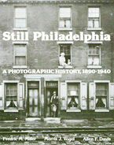

Photographic memories of Philadelphia, volume 1
Photographic memories of Philadelphia, volume 1


 Photographic memories of Philadelphia, volume 1
Photographic memories of Philadelphia, volume 1

|  |
Still PhiladelphiaA Photographic History, 1890-1940Fredric M. Miller, Morris J. Vogel and Allen F. Daviscloth EAN: 978-0-87722-306-1 (ISBN: 0-87722-306-8) |
Philadelphia Book Clinic Certificate of Award, 1984
"[It] sets the standard against which other photographic histories of cities will be measured in the future."
—The Pennsylvania Magazine of History and Biography
This is a book about Philadelphia and about photography, but it is not the usual book about either. On one level, this is the pictorial story of a great industrial metropolis in transition. It is the story of a railroad city, a city of trolleys and subways and horse-drawn vehicles, as it gradually succumbed to the automobile. It is the story of a city filled with neighborhood industry giving way to suburbs, to commuter travel, and to a change in the very nature of work. It is the story of a city spreading out, expanding and doubling in population in fifty years. It is the story of urban exuberance and vitality where ethnic groups mixed and mingled, but it is also the story of slums and poverty, crime and conflict.
On another level, this is a Philadelphia family album. It is filled with pictures of ordinary people, who look out at us from the past. Some of these people are captured accidentally by the camera, some are posed by the photographer, but none are seated for a formal portrait. Most are wearing their everyday clothes and many are working, shopping, walking, or playing. In addition to the faces, the photographs in this book record thousands of places—neighborhoods, markets, mills, factories, houses, and even a few farms—ordinary scenes that capture some of the texture of life in another age.
Still Philadelphia focuses on the city of immigrants and industry, not on the lives and houses of the wealthy. It says little about unusual civic occasions and nothing about political events. The reader will not find a photograph of a mayor or a celebrity, or even pictures of the Sesqui-Centennial Exposition. Although City Hall can be detected in many photographs, and a few public buildings, such as the Art Museum, may be seen in the distance in some views, the authors have avoided the ceremonial, carefully composed shots of public institutions and private mansions that usually grace photographic books on Philadelphia and other cities. In fact, this may be the first illustrated book on Philadelphia without a picture of Independence Hall.
There are some famous photographers represented here—Lewis Hine and John Vachon, for example—and some less well known, like John Frank Keith, Philip Wallace, and G. Mark Wilson. But most of the photographs in this book were taken by anonymous photographers, some working for the city, some for Octavia Hill Association, some hired to take pictures of various businesses and industries. The authors are not as concerned with who took the photographs, or the technical quality of the print, or the equipment used, as they are with what these photographs can tell us about the texture of urban life. They constantly ask the questions: Why was this photograph taken? What was the purpose and point of view of the photographer? What does the photograph tell us accidentally?
This book can be read or viewed in a variety of ways. On can begin at the beginning and move through systematically to the end, discovering the change and development of the city over time. One can read each chapter as a separate unit, or open the book at any place, for each photograph or group of photographs has an explanation that makes it meaningful without reference to other photographs. But the book has a larger meaning as well. It is a serious book, although it has no footnotes or bibliography. It is meant to be savored and studied by Philadelphians everywhere, and by all those who share our excitement about old photographs and the vitality of urban life.
"Consistent and fascinating. Recommended for regional libraries and libraries having good urban history collections."
—Library Journal
"A celebration of Philadelphia. Here is the face of the other Philadelphia, often the forgotten Philadelphia...All those remotely interested in the city—its people, its hitory—should have this book in their libraries."
—John Francis Marion, Philadelphia Inquirer
Preface
Acknowledgments
1. Introduction
2. The City of the 1890s
3. Immigrant Havens
4. Workshop of the World
5. The Vision of Reform
6. A Gallery of Faces
7. Technologies of Change
8. The Rise of the Downtown
9. The New Philadelphia
10. The City of the 1930s
Sources
Index
Fredric M. Miler is Curator of the Urban Archives Center, Paley Library, Temple University.
Morris J. Vogel is Associate Professor of History, Temple University.
Allen F. Davis is Professor of History, Temple University, and co-editor of The Peoples of Philadelphia, published by Temple University Press.
The authors have also collaborated on Philadelphia Stories: A Photographic History, 1920-1960 (Temple).
American Studies
Philadelphia Region
Art and Photography
© 2015 Temple University. All Rights Reserved. This page: http://www.temple.edu/tempress/titles/272_reg.html.